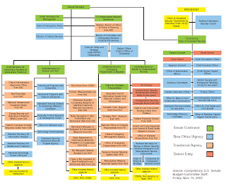

Like the H1N1 flu virus that is the focus of growing public alarm, the Homeland Security State is a recombinant entity.
The H1N1 pathogen is composed of strains of influenza that don't naturally fuse together. In similar fashion, the Homeland Security apparat has subsumed numerous functions that are not mutually compatible.
The DHS claims the power to regulate everything from border security to the political views of domestic "extremists" -- the latter being a relatively recent assignment. Within this mandate it also treats environmental disasters (earthquakes, fires, floods) and diseases as "security" issues as well, rather than as acts of God or the inhospitable results of impersonal natural processes.

The ever-metastasizing Homeland Security apparatus.
Whether or not a given calamity is the product of deliberate, organized human malice, the DHS is structured to pursue only one approach: It will expand the power of the political class while radically regimenting the lives of the productive. This means more arbitrary power in the hands of bureaucrats and their armed enforcers, and greater restrictions on freedom of movement.
In Mexico, where the impact of the current outbreak has been most pronounced, the government has employed its emergency powers to shut down most of the country's commercial activity. Assuming that Mexicans comply, this order is tantamount to placing the entire population under quarantine -- which is to say, under house arrest. Don't imagine for a pico-second that officials on this side of the Rio Grande aren't taking notes.
Social engineers despise genuinely autonomous individuals, people with the means to come and go as they will without permission from their superiors. Those who fancy themselves to be society's supervisors would love to pin the rest of us down like butterflies in a lepidopterist's display case, or cattle-pen us in urban reservations we can leave only with the state's generous permission -- and, even then, only if our movements can be tracked and recorded and used against us later.
Tased and abused: Pastor Steven Anderson displays some of the handiwork of the intrepid sentinels of our sacred southern frontier. Beaten and tased for refusing a warrantless search at a "border checkpoint" well inside the U.S., Anderson is seen above after receiving medical attention. Below, right: Anderson with his wife -- who was born in then-Communist Hungary -- and three of their five children.
These ill intentions are made obvious in the increasing use of checkpoints of various kinds -- sobriety roadblocks, seatbelt and child safety seat inspections, even "border enforcement" barricades established as much as 100 miles inside the territory of the United State(s).
Pastor Steven Anderson, the Baptist preacher from Tempe, Arizona who was recently beaten and tased by Border Patrol Brownshirts near Yuma, can attest to the fact that it is potentially fatal for Americans to demand they be treated like citizens rather than serfs at such checkpoints.
Anderson, who supports himself and his ministry through a full-time job selling and installing security systems, frequently travels throughout the Southwest. In a recent telephone interview he explained to me that until recently he endured the Border Patrol checkpoints as a nuisance. However, he continues, "I just got sick of being treated like a criminal or a terrorist in my own country, and decided that it was time to start asserting the rights that the Constitution guarantees to me."
After he refused to permit an unconstitutional search of his vehicle during his most recent checkpoint stop, Anderson found himself face-down in a pile of broken glass after Border Patrol and state police shattered the windows of his vehicle. Despite the fact that he put up no resistance, Anderson was beaten and tased repeatedly while pleading for mercy.
Predictably enough, after being subject to a criminal assault conducted under color of state "authority," Anderson was charged with "disobeying the orders of a law enforcement officer." That charge reflects the fundamental assumption of martial law: The demands of anybody in a government-issued costume are to be obeyed by civilians without hesitation, even when they have no legal or constitutional justification.
The Regime insists that constitutional guarantees against warrantless (and suspicion-less) searches don't apply at border checkpoints. Given that an estimated two-thirds of the population live and work within this exclusion zone -- what the ACLU aptly calls a "Constitution-Free Zone" -- it would be wise to see Pastor Anderson's experience as a foreshadowing of outrages soon to come as our rulers constrict our freedom of movement.
Another manifestation of this urge to pen up the population is the proliferation of narcotics enforcement exercises involving school lockdowns. Exercises of that kind take place somewhere in this country every week, and they tend to happen with greater frequency in the Spring.
Typically such raids produce little or no evidence of narcotics activity, and are justified as a way of demonstrating a community's "commitment" to suppressing the consumption of certain proscribed substances.
Following one such "routine" warrantless drug sweep at Maricopa High School in Arizona, school and police officials explained that its purpose, in addition to sending the familiar "message" about narotics use, was to provide "several police agencies and canine officers a chance to practice their skills in drug detection," and to offer the police dogs in particular "a chance to work in a real life atmosphere rather than the `sterile' conditions they train in." So teenagers were given the opportunity to be treated as prisoners while being used as guinea pigs in a police training exercise.
The assumption here appears to be that both sets of skills -- those of police in exerting control over civilian populations, and those of civilians in submitting to such impositions -- will become increasingly useful in the future.
Rin-Tin-Tin he ain't: This noble German Shepherd had the misfortune of being trained as a narcotics-sniffing dog, an unconscionable act of government animal abuse. This beautiful but unfortunate canine is seen at a recent drug "lock-down" at an Arizona high school.
Chances are, we'll see opportunities for the use of both skill sets as the Swine Flu "crisis" unfolds. Shortly after 9/11, the Department of Health and Human Services disseminated a Model State Emergency Health Powers Act (MSEHPA).
As health freedom activist Susan Blevins observed in a critique of the model act, that template was designed to give "state public health officials broad, new police powers ... in the name of controlling epidemics of infectious diseases during public health emergencies."
Both the powers and the circumstances defining a "health emergency" were quite broadly defined in the proposed act. Among the specific dictatorial functions authorized by the MSEHPA, Blevins listed the following:
*Governors and public health officials could order the compulsory medical examination of anyone suspected of carrying an "infectious disease";
*State officials would be permitted to order compulsory vaccinations, quarantines, and detentions;
*Doctor-patient confidentiality would be abolished, and all health care workers would be forced to report all cases in which an individual posed a "significant risk" to public health;
*Pharmacists would be required to report any "unusual" prescription rates suggestive of the spread of epidemic diseases;
*Governors and health officials would be authorized to set aside, at their discretion, laws dealing with privacy, medical licensure, and property rights in order to address the health "emergency";
*Seizure and state control of private property, including pharmaceutical plants, media and communication facilities, and residential health care centers, would be allowed;
*State governments would be authorized to mobilize the "organized militia [that is, the National Guard] into service to the state to help enforce the state's orders";
*Public officials would be permitted to impose rationing of food, fuel, and various other critical commodities, including explosives and -- most critically -- firearms.
Given the scope and invasiveness of the MSEHPA, resistance coalesced among freedom activists, particularly those particularly concerned about privacy and the right to armed self-defense. Some of the most onerous aspects of the model legislation were modified. To date, according to The Center for Law & the Public Health at Georgetown and Johns Hopkins Universities, thirty-eight states and the District of Columbia have enacted a total of 66 measures incorporating provisions derived from, or inspired by, the MSEHPA.
Just days ago, the Massachusetts legislature passed a Disaster and Pandemic Preparation and Response Bill that incorporates some of the model legislation's draconian elements, including provisions for mandatory quarantine (once again, a form of house arrest), seizure of property, and rationing of various commodities at the discretion of the State's Medical Commissioner -- a position better suited to a title such as "czar" or "commissar."
Prior to the most recent Swine Flu outbreak, the Massachusetts Pandemic Response Bill had been dammed up in committee. This changed very quickly in response to the media-abetted public furor over a flu outbreak that -- so far -- while admittedly nasty and worrisome, shows few signs of growing into authentic pandemic.
As I've noted before, we're already on the wrong side of the Rubicon regarding the militarization of domestic law enforcement and emergency response agencies. In Mexico, the role of the military in response to the outbreak is becoming increasingly overt and heavy-handed. As Matthew Rothschild of The Progressive points out, here in the U.S., the prospect of a pandemic may result in a more expansive role for the Pentagon's NorthCom in administering public affairs.
NorthCom, it should be remembered, is in charge of the combat team now permanently assigned to domestic missions -- including, as something other than luck would have it, dealing with national "health emergencies."
Whatever its immediate impact on public health, the current flu outbreak will do a great deal to exacerbate the infection of police state militarism afflicting our body politic. It's quite likely that this year's flu season will turn out to be perfectly unexceptional. But this won't deter our rulers from exploiting this opportunity to capitalize on public fear as a way of advancing a sinister redefinition of civic "normalcy."

On sale now.
Dum spiro, pugno!